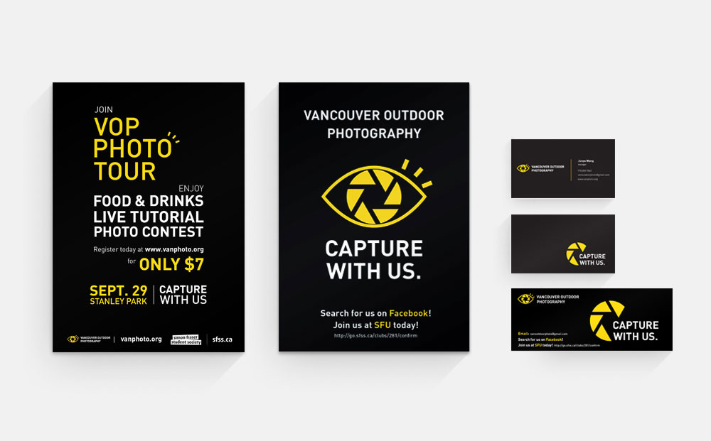

VOP Branding Design
- Branding / Graphic Design -
TYPE
- UI/UX Design
- Volunteer Work for My Own Club
- Individual Work
ROLE
- Graphic Designer
TOOLS
- Adobe Illustrator
TIME
- September 2012
- within 1 weeks
Description
Volunteered branding design through graphics for my own photography club, done individually.
The objective was to create remarkable branding designs that can represent club culture, as well as being recognizable for notability and attracting membership.
Story Behind Project
VOP (Vancouver Outdoor Photography) is a photography club focusing on outdoor photography. Since it is a newly established club by 3 SFU IAT students (including me), I volunteered to design a recognizable logo to represent our club and posters to advertise our events such as photo contest, photo tour, or vophops.
As the co-founder, vice-president and volunteered graphic designer of VOP, my responsibility was to design the logo, posters, flyers and business cards for VOP. It was my first doing a branding design for a series of products.
As a result, the logo was highly acclaimed among VOP members. The posters are very recognizable and remarkable from many other posters on school wall, which brought us notability and membership as well.
Design Process
I started designing the logo with an eye with aperture blades as its eyeball and aperture as pupil. This is because what eyes see through the camera is exactly what the lens sees. Then I added 3 short lines on top right of the eye, which can be seen as both eyelash or the sound of snapping. Since members in our club are mostly young people, adding these lines also gives the logo life and meet with the out-going personality of our target audience.
I chose yellow, black and white as color palette because black and white give a formal and classic feeling, while yellow makes it more bright, modern, out-going and fashion. They are also the main colors of National Geography, a professional photography magazine and website admired by lots of outdoor photographers.
Final Deliveries


These are how the printed flyers and posters look. Photos are taken in club fair on SFU Burnaby Campus.